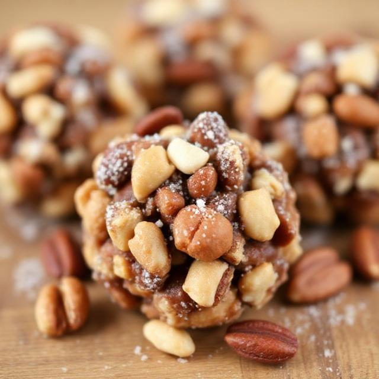

Squirrel Scoops
A crunchy, nut-packed treat bursting with forest flavors! Handcrafted with the finest selection of woodland treasures, these Squirrel Scoops are a chewy-crunchy snack designed to tantalize even the most discerning squirrel palate. Each bite-sized treat is packed with roasted hazelnuts, crushed acorns, sunflower seeds, pumpkin seeds, and dried apple, bound with natural tree sap syrup for a sweet finish. Wrapped in a delicate shell of toasted bark flakes and rolled in ground pine nuts, this snack satisfies hunger and delivers a burst of energy for midday adventures.
Ingredients
- 1/4 cup crushed acorns (leached to remove tannins)
- 1/4 cup roasted hazelnuts, chopped
- 2 tbsp crushed walnuts
- 2 tbsp sunflower seeds (unsalted)
- 2 tbsp pumpkin seeds (raw or roasted)
- 1 tbsp rolled oats (optional)
- 2 tbsp dried apple, finely chopped
- 1 tbsp dried cranberries or raisins
- 2 tbsp natural tree sap syrup
- 1 tbsp nut butter
- 1 tbsp toasted bark flakes
- 1 tbsp ground pine nuts
Instructions
- In a mixing bowl, combine: Acorns, hazelnuts, walnuts, sunflower seeds, pumpkin seeds, rolled oats (optional), dried apple and cranberries/raisins.
- Stir in: Nut butter and tree sap syrup. Mix until sticky and clumping.
- Shape Treats: Roll 1 tbsp scoops into balls or discs.
- Coat: Roll each treat in pine nuts and bark flakes.
- Let Set: Refrigerate 30–60 minutes to firm up.